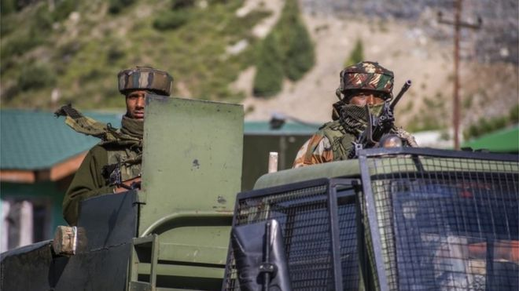

↪GALWAN VALLEY: CHINA TO USE MARTIAL ART TRAINERS AFTER INDIA BORDER CLASH
→China has said it is moving 20 martial art trainers to the Tibetan plateau to train its forces.
→Under an agreement dating back to 1996, neither side carries guns or explosives in the area.
→China has not released any information about its casualties, while India says 76 of its soldiers were injured.
→Border clash a 'deliberate provocation' - China
→A freezing, inhospitable battlefield on a mountain
→India-China border dispute explained in 400 words
→News of the army's new martial arts trainers was reported by official Chinese news outlets on 20 June, according to Hong Kong media.
↪Galwan Valley: Satellite images 'show China structures' on India border
→China has built new structures near the site of a Himalayan border clash that left 20 Indian troops dead earlier this month, fresh satellite images suggest.
→Bunkers, tents and storage units for military hardware are visible in an area where last month there were none.
→Fighting between the nuclear-armed powers over their disputed frontier has prompted alarm. Chinese casualties were also reported but not confirmed.
→The latest images were published as the sides hold talks to defuse tensions.
→The fresh satellite images, dated 22 June, are from space technology company Maxar. The structures which appear to have been built by China overlooking the Galwan River were not visible in aerial photographs earlier in June, Reuters reported.
↪Galwan Valley: China accuses India of 'deliberate provocation'

→China has accused Indian troops of a "deliberate provocation" in its first official comments on Monday's deadly clash at a disputed Himalayan border.
→Foreign ministry spokesman Lijian Zhao said the troops had crossed into Chinese territory and attacked, triggering "fierce physical conflicts".
→However he did not give details of any Chinese casualties.
→On Friday Indian PM Narendra Modi said no foreign soldiers had crossed India's borders and no territory
→Mr Modi vowed that India would defend its border with military force if necessary.
→The fake news about India and China's border clash
Twenty Indian soldiers were killed in the clash in the Galwan Valley. India has said that both sides suffered losses during the fighting.
↪'Galwan Valley: India PM Modi says military will keep borders secure
→India has vowed to defend its border with military force if necessary, after 20 of its soldiers were killed in violence with Chinese troops on Monday.
→Prime Minister Narendra Modi says no foreign soldiers are inside Indian borders and no territory has been lost.
→China has not released any information about its casualties since the clashes at the disputed Himalayan border.
→The two nuclear powers accuse each other of crossing the poorly demarcated border and provoking the fight.
→India has said that both sides suffered losses during the fighting in the Galwan Valley, in Ladakh.
→India and China downplay reports of soldier release
→In a televised statement on Friday, Mr Modi said that India's armed forces had been "given a free hand to take all necessary steps" to protect Indian territory.
↪Galwan Valley: India and China downplay reports of soldier release
→China has denied having any Indian soldiers currently in custody, as both sides try to lower the temperature following a fatal clash along their disputed border in the Galwan Valley.
→Indian media had reported that China detained 10 Indian soldiers in the fight, releasing them on Thursday.
→Chinese government spokesman Zhao Lijian said on Friday that no Indian soldiers were "currently" being held.
→The Indian government said only that none of its soldiers were missing.
→The careful wording of the statements did little to clarify whether Chinese forces in the contested area had taken Indian soldiers into custody and subsequently released them.
→Indian media reports suggested that a lieutenant-colonel and three majors were among 10 held by the Chinese, and that their release was the top priority in military and diplomatic talks between the nuclear powers on Wednesday.
↪India-China clash: Diplomats 'strongly protest' over border clashes
→The Indian and Chinese foreign ministers have exchanged protests over clashes in a disputed Himalayan border area which led to the deaths of at least 20 Indian troops.
→India's Subrahmanyam Jaishankar said China tried to erect a structure inside Indian territory, while China's Wang Yi said Indian troops attacked first.
→But in a phone call both men promised not to escalate the situation.
→It was the first deadly clash at the disputed border for at least 45 years.
→Soldiers reportedly brawled with sticks and bats but no shots were fired.
→China has not released casualty figures. Unconfirmed reports in Indian media say at least 40 Chinese soldiers died. Some Indian soldiers are still believed to be missing.
→Earlier Indian Prime Minister Narendra Modi said the Indian deaths "will not be in vain" and that India would be "proud that our soldiers died fighting the Chinese" in the clash in the Ladakh region on Monday.